Reporting incidents, hazards and near misses in Workday
Storyboard v7 for the employee training video. Each frame shows a still from the animated clip (or the illustration if not animated yet), the voice-over that plays over it, the action and the camera move. The Clip line names the delivered file. Dashed frames are motion graphics or the Workday screen recording.
Length ≈ 3:55Language EnglishFrames 15 illustrations, 4 screen-recording beats, 3 graphicsAudience all employees, operations first
See it.Report it.Prevent it.
Scene 1
Why incident reporting matters
0:00 – 0:25
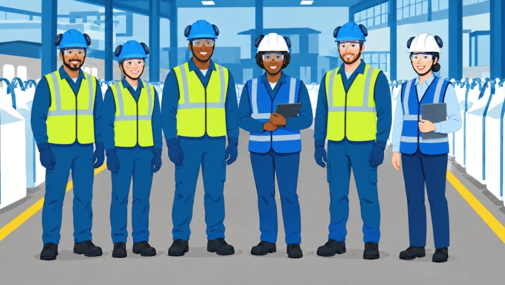
1A0:00
Voice-over
Together, we can create a safer workplace by learning from every hazard, near miss and incident.
ActionThe team standing together inside the yellow walkway, full PPE.
CameraSlow push-in.
Clip1A_equipo_acercamiento_v1
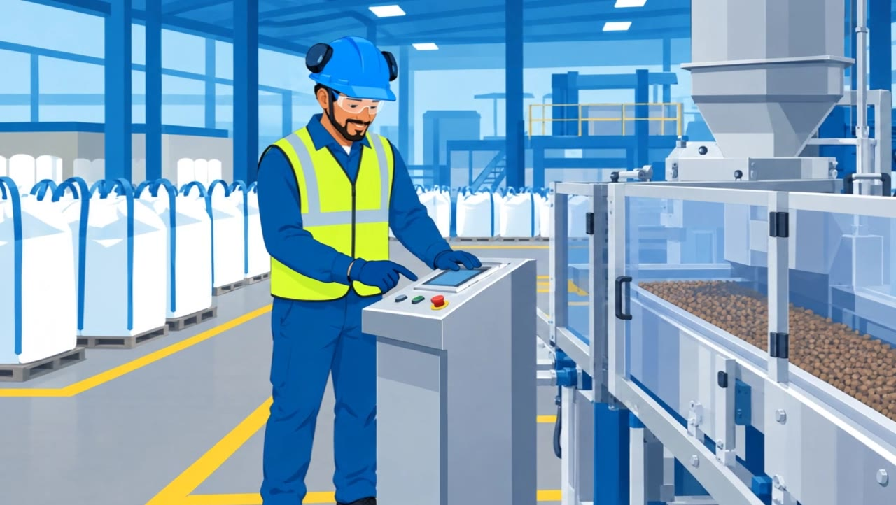
1A·20:04
Voice-over
Voice-over continues from the previous frame
ActionProduction operator at the control panel; pellets moving along the line. Guards closed, full PPE.
CameraSlow push-in, pellets animated.
Clip1A_produccion_pellets_v1
1B0:09
Voice-over
When you report what you see or experience, you help us identify risks early and prevent future harm.
ActionWarehouse operator scanning a pallet from the pedestrian side of the racking.
CameraLateral slide along the racking.
ClipNot animated yet
1C0:19
Voice-over
Reporting is quick and easy for everyone in Workday.
ActionOffice: employee typing on her laptop to start Workday. Screen faces away; the real Workday screen comes in Scene 4.
CameraGentle push-in toward the laptop.
Clip1C_oficina_tecleo_vB
Scene 2
What is a safety incident?
0:25 – 1:10
Motion graphicOn screen: “What is a safety incident?”
2·00:25
Voice-over
Safety events can take different forms, including:
ActionTitle card on light-blue background.
CameraMotion graphic
On screenOn screen: “What is a safety incident?”
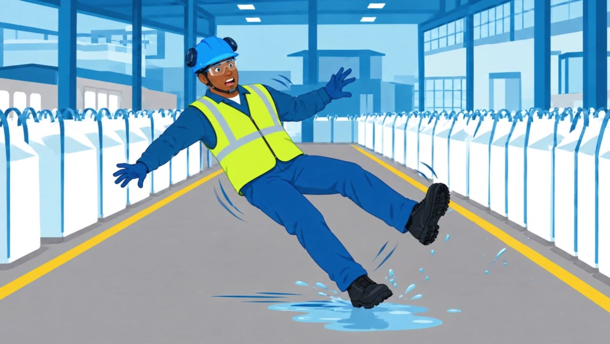
2A0:32
Voice-over
Injuries, such as cuts, burns, strains or fractures.
ActionPERSONAL INJURY: operator slips on spilled liquid. Not graphic, no blood.
CameraLocked push-in.
On screenLabel: Personal injury
Clip2A_resbalon_vA / vB
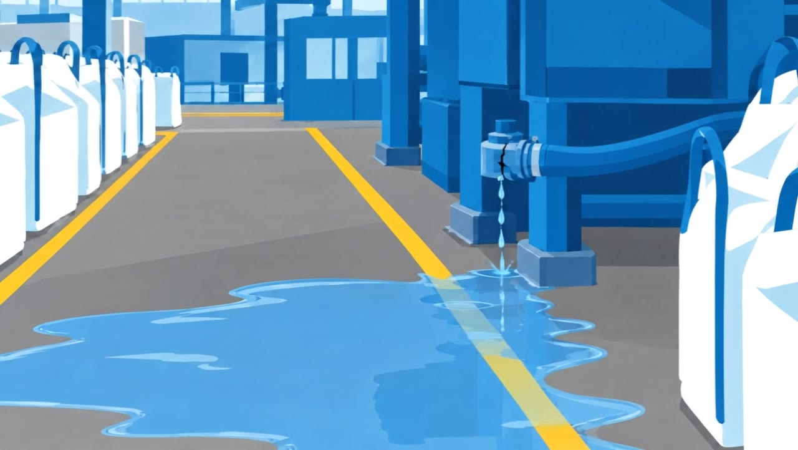
2B0:37
Voice-over
Hazards, such as damaged equipment, spills, blocked walkways or other unsafe conditions that could cause harm.
ActionHAZARD: liquid leaking from a cracked hose onto the walkway. No people.
CameraLocked push-in.
On screenLabel: Hazard
Clip2B_derrame_vA / vB
2C0:46
Voice-over
Near misses, where no one was hurt and nothing was damaged, but easily could have been.
ActionNEAR MISS: an overhanging box falls from the racking and lands more than a metre away. Nobody is hit.
CameraBox falls in real time, short hold on the operator's reaction.
On screenLabel: Near miss
ClipNot animated yet
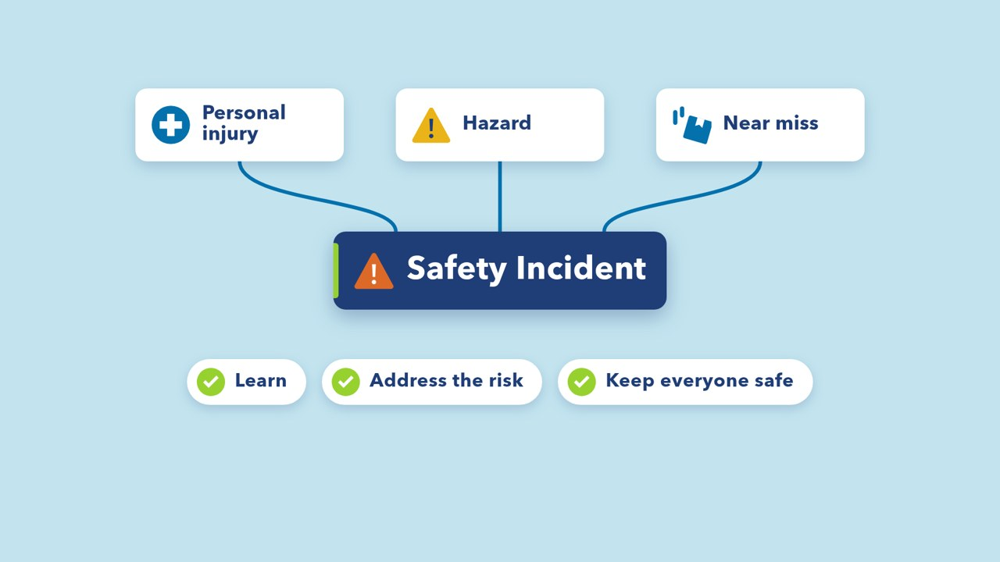
2D0:55
Voice-over
Even when a hazard or near miss causes no harm, reporting it gives us the opportunity to learn, address the risk and help keep everyone safe.
ActionThe three cards connect to one central box “Safety Incident” (orange warning icon), then the three outcomes appear.
CameraMotion graphic with transparent background, over the live shots below.
On screenCards: Personal injury · Hazard · Near miss → Safety Incident → Learn · Address the risk · Keep everyone safe
Clip2D_safety_incident_alpha_1080p24.mov
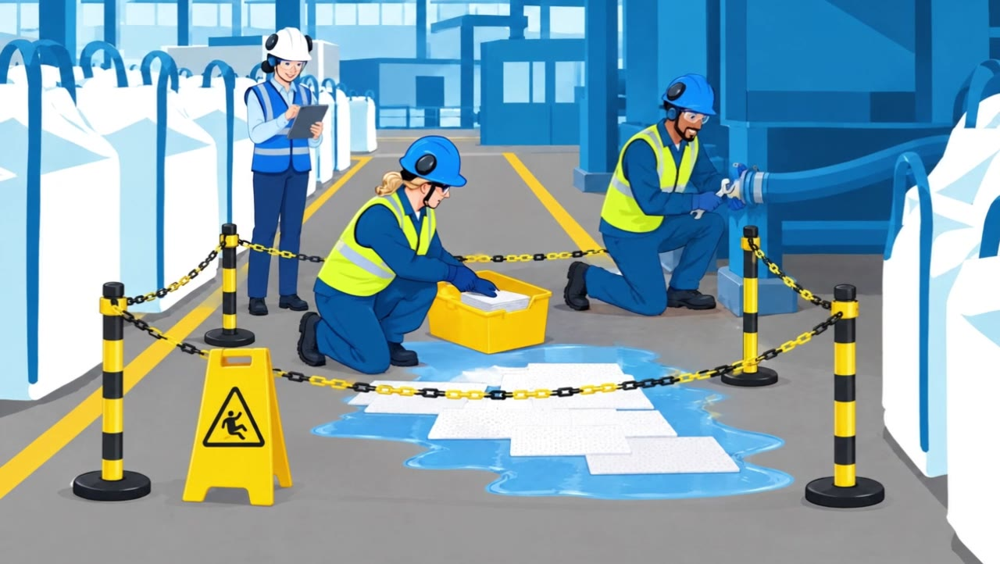
2D·20:59
Voice-over
Voice-over continues from the previous frame
ActionThe hazard is being fixed: area taped off, sign in place, the hose repaired and the spill cleaned.
CameraLocked push-in.
Clip2D_arreglo_v1
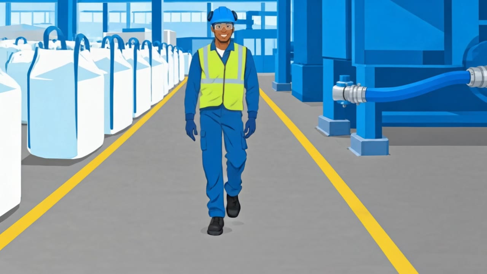
2D·31:04
Voice-over
Voice-over continues from the previous frame
ActionAfterwards the walkway is dry and safe; an operator walks through it.
CameraLocked push-in.
Clip2D_senda_segura_v1
Scene 3
What should you do?
1:10 – 1:55
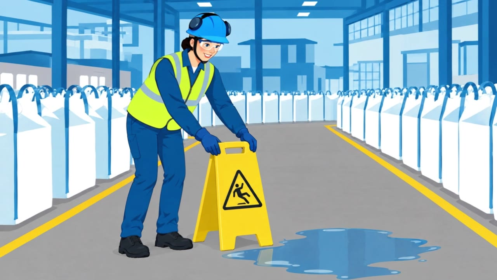
3A1:10
Voice-over
If an incident occurs, your first priority is to prevent further injury or material damage. If it is safe to do so, stop the activity, secure the area and take any immediate action needed to protect people and create a safe workplace.
ActionOperator places a wet-floor sign at the edge of the spill, standing on dry floor.
CameraMedium shot, small push-in.
On screenIcon: warning sign
Clip3A_cartel_v1
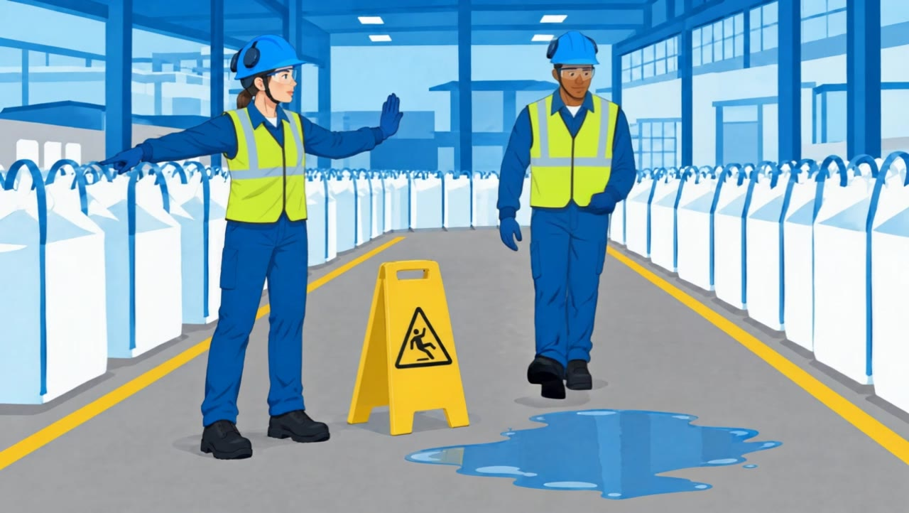
3A·21:20
Voice-over
Voice-over continues from the previous frame
ActionShe raises her arm to stop a colleague and sends him around the spill, inside the walkway.
CameraLocked push-in. Trim at ~4 s.
Clip3A_proteger_v1
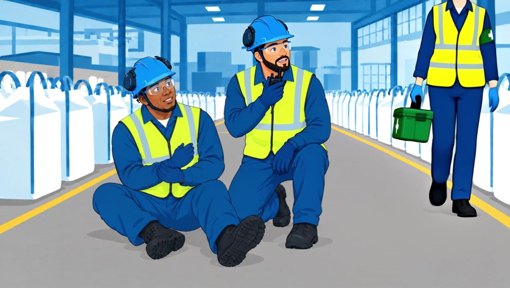
3B1:32
Voice-over
Help anyone who is injured, seek assistance and follow local emergency procedures.
ActionA colleague kneels next to the injured operator without touching him and calls for help; the first-aider arrives with the kit. No puddle in the path.
CameraLocked push-in, 10 s.
On screenIcon: first aid / radio
Clip3B_asistir_10s_v2
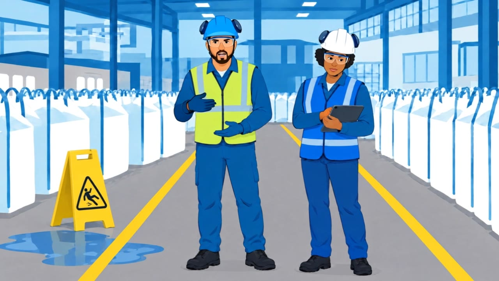
3C1:41
Voice-over
Once the situation is safe and under control, it is time to report: inform your supervisor or manager as soon as possible…
ActionOperator explains what happened to the shift supervisor; the marked-off spill is visible behind them.
CameraLocked push-in, 7 s.
On screenIcon: speech bubble
Clip3C_aviso_supervisora_v1
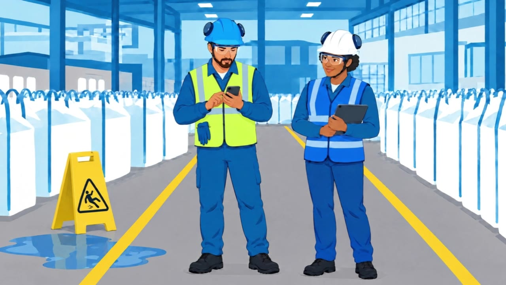
3C·21:48
Voice-over
…and submit the incident report in Workday.
ActionThe operator starts the report on the phone while the supervisor checks her tablet.
CameraLocked push-in, 5 s.
Clip3C_reporte_celular_v1
Scene 4
How to report in Workday
1:55 – 3:25
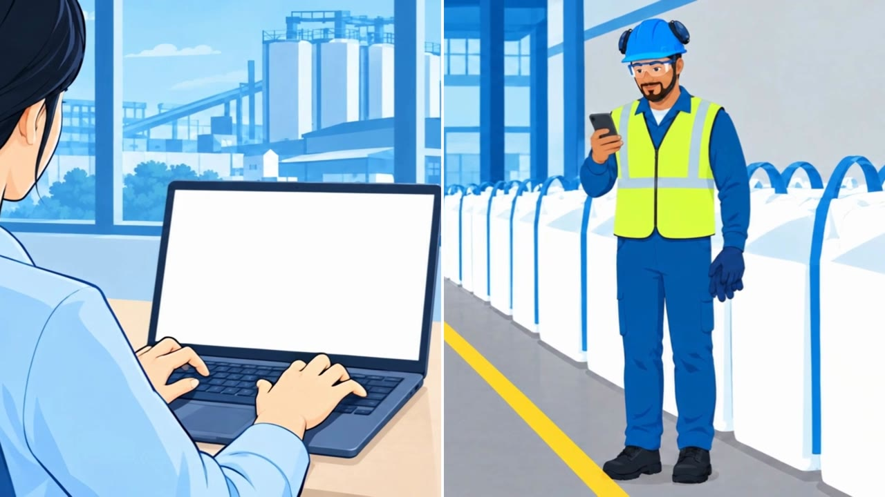
4A1:55
Voice-over
As an employee, you can report safety incidents directly in Workday, helping ensure that important information is recorded promptly. You can report from your computer or phone, whichever is most convenient.
ActionPhone operator full screen, then split screen: the office employee on her laptop (left) and the operator on the phone (right).
CameraSplit screen with a white divider.
Clip4A_montaje_pantalla_partida_v1
4A·22:06
Voice-over
Voice-over continues from the previous frame
ActionThe computer half expands to full screen and the camera zooms into the blank laptop screen, ending on full white.
CameraZoom into the screen, dissolve into the screen recording.
Clip4A_montaje_pantalla_partida_v1
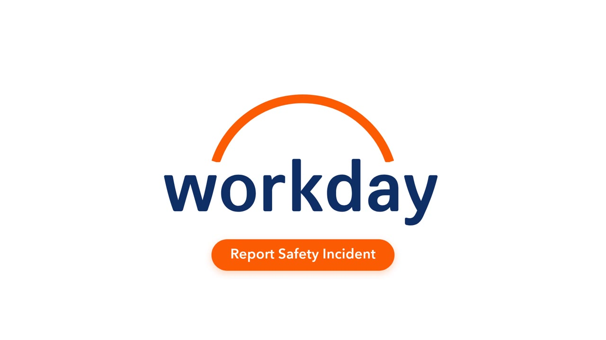
4·12:10
Voice-over
To get started, just open Workday and select “Report Safety Incident” from the menu.
ActionWorkday logo loads, the loading dots turn into the “Report Safety Incident” button; then the screen recording: open Workday → menu → Report Safety Incident.
You can also search for “Report Safety Incident” using the search bar.
ActionScreen recording: type the search term in the search bar.
CameraScreen recording
On screenHighlight: search bar
Screen recordingLocation: In which business unit and site did the incident happen? · Incident date and time: When did the incident happen? · Incident type: What type of incident? · Incident location: In what area did the incident happen? · Summary: Describe what happened and leave out names and other personal information
4·32:27
Voice-over
You just need to complete the following fields: business unit and site; date and time of the incident; type of incident; area where the incident occurred; and a brief summary of what happened. Please do not include names or other personal information.
ActionScreen recording: zoom on each field in turn with its call-out.
CameraScreen recording + call-outs
On screenLocation: In which business unit and site did the incident happen? · Incident date and time: When did the incident happen? · Incident type: What type of incident? · Incident location: In what area did the incident happen? · Summary: Describe what happened and leave out names and other personal information
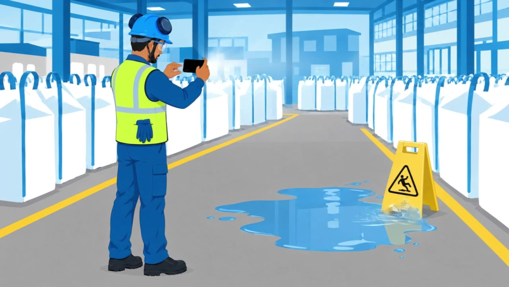
4B2:55
Voice-over
If it is safe and relevant, you can also upload photos before submitting the report.
ActionOperator photographs the puddle with the phone from outside it. Sign already in place.
CameraLocked push-in, then the photo appears in the form.
On screenHighlight: Take photo
Clip4B_foto_charco_v1
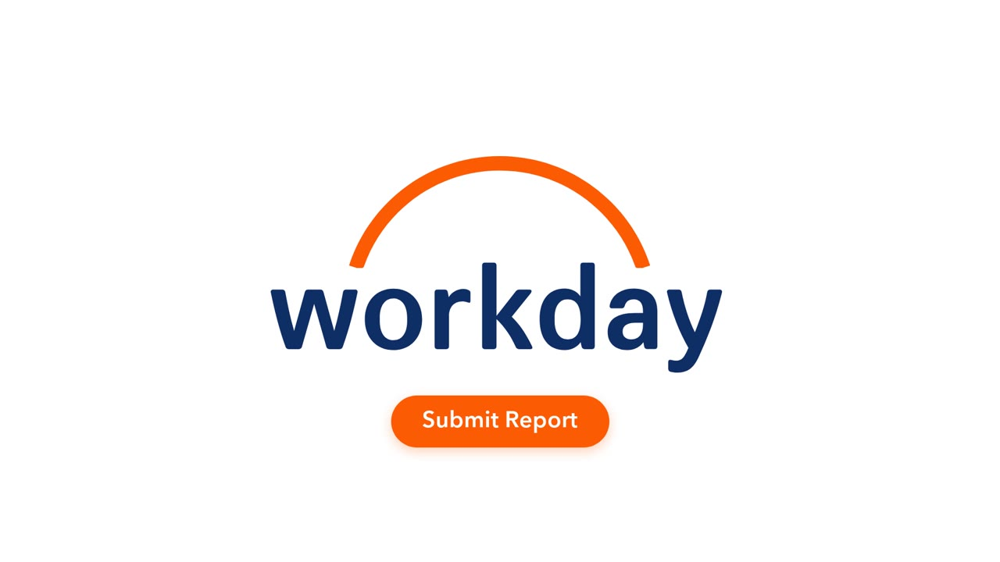
4·43:03
Voice-over
No voice-over (music only)
ActionScreen recording: attachment shown, tap Submit, confirmation. Can open or close with the “Submit Report” button animation.
CameraScreen recording + motion graphic
On screenHighlight: Submit
ClipWorkday_bolitas_Submit_Report_1080p24
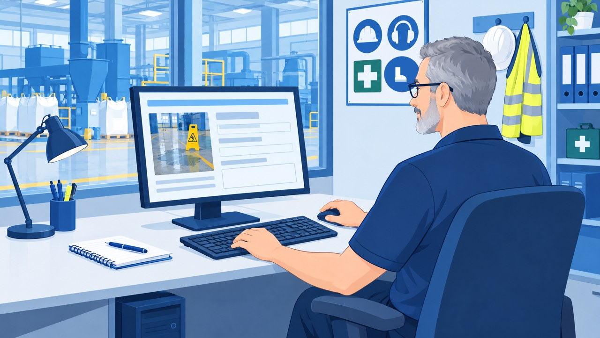
4C3:11
Voice-over
After you submit the report, your local Health & Safety representative will review it, investigate the incident, ensure relevant corrective actions are taken and follow up as needed.
ActionA different person in a different place: the site Health & Safety Partner in the H&S office (desktop PC, glass partition onto the production hall, PPE on the hook) reviews the new report and the puddle photo.
CameraSlow push-in over the shoulder.
Clip4C_safety_partner_revisa_v1 (10 s)
Scene 5
Closing
3:25 – 3:47
5A3:25
Voice-over
Every report makes a difference.
ActionAnother site: two operators walking on the marked walkway outside a coastal feed plant.
CameraWorkers walk toward camera, camera tracks back.
Clip5A_exterior_caminan_v1
5B3:29
Voice-over
By reporting incidents, you help protect your colleagues…
ActionSupervisor and the Safety Partner from 4C reviewing the improvement trend.
CameraLocked push-in.
Clip5B_supervisora_safety_partner_v1
5C3:34
Voice-over
…and contribute to a safer workplace for everyone.
ActionThe whole team in the production hall, inside the walkway.